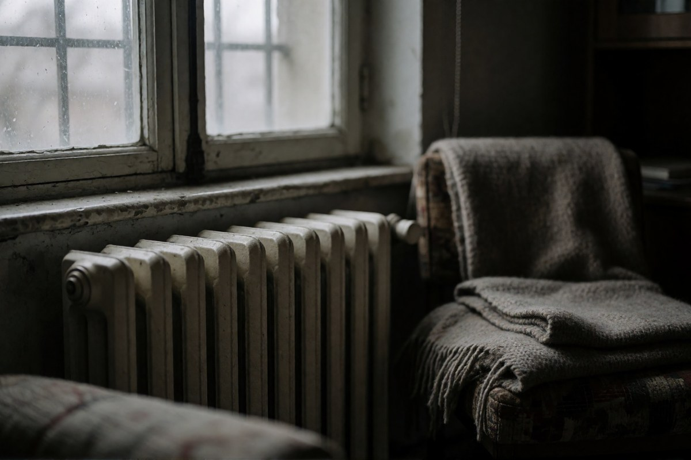

Geopolitica · 17 novembre 2026
L'Iran ha le seconde riserve di gas del mondo e rischia un inverno al freddo

Dopo i raid sugli impianti di South Pars Teheran prepara razionamenti per tutto il Paese, capitale compresa. Il presidente del Parlamento chiede di tagliare i consumi del 10 per cento.
di Franco Zanghì
L'Iran possiede le seconde riserve di gas naturale del mondo e si prepara a un inverno al freddo. L'appello è partito il 25 ottobre: il presidente del Parlamento iraniano, Mohammad Bagher Ghalibaf, ha chiesto ai cittadini di tagliare i consumi di gas almeno del 10 per cento, promettendo che chi risparmia riceverà il corrispettivo direttamente sul conto in banca. Lo ha riferito l'agenzia France Presse. Nelle settimane successive il quadro è peggiorato.
Perché manca il gas
La guerra con Stati Uniti e Israele, cominciata alla fine di febbraio, ha colpito anche gli impianti energetici. Secondo la compagnia nazionale del gas iraniana gli attacchi a quattro impianti collegati a South Pars, il grande giacimento nel Golfo Persico, all'inizio hanno sottratto 230 milioni di metri cubi al giorno; circa 100 milioni sono stati recuperati. Un dirigente del ministero del Petrolio ha ammesso che non esiste ancora una data per la ricostruzione.
I numeri dell'inverno
La portavoce del governo ha detto che nei giorni più freddi potrebbero mancare fino a 430 milioni di metri cubi al giorno, contro i circa 300 degli anni passati. I tagli, avverte Teheran, potrebbero toccare tutto il Paese, capitale compresa. Per la compagnia del gas 11 province su 31 rischiano interruzioni, e ogni grado di temperatura in meno costa altri 25 milioni di metri cubi al giorno. Il governo prepara quote mensili per provincia su acqua, gas ed elettricità, e minaccia tariffe più alte per i consumi eccessivi. Le cementerie, secondo la loro associazione, ricevono già una frazione del gas di cui avrebbero bisogno.
Le soluzioni sul tavolo
Teheran ha trattato con Mosca per l'importazione di gas russo, ma secondo le stime citate dagli analisti americani coprirebbe meno del 2 per cento del buco previsto. Il segretario al Tesoro degli Stati Uniti, Scott Bessent, ha avvertito che per gli iraniani sarà un inverno duro.
Il punto
La guerra non si combatte solo con i missili. Quest'inverno il fronte interno dell'Iran passa dai termosifoni, e un governo che non riesce a scaldare le case avrà un problema in più con la propria gente. Il passaggio da guardare è il primo grande freddo: se i tagli arriveranno a Teheran, il malcontento diventerà visibile; se il governo riuscirà a spostarli su industrie e province lontane, il prezzo lo pagheranno le fabbriche e chi vive ai margini.
Fonti
- France Presse, appello di Ghalibaf al risparmio di gas, 25 ottobre 2026, ripresa da Business Recorder
- National Iranian American Council, «Iran faces a deepening winter gas crisis», 13 novembre 2026
- National Security Journal, «Iran just warned that gas cuts may occur all over the country, including in Tehran», 11 novembre 2026
- Energy Intelligence, «Iran winter gas squeeze inevitable despite South Pars repairs», novembre 2026
Le cifre sui danni agli impianti e sul fabbisogno invernale provengono da fonti iraniane e da centri studi americani e non sono verificabili in modo indipendente: erano ancora in aggiornamento alla data di pubblicazione.